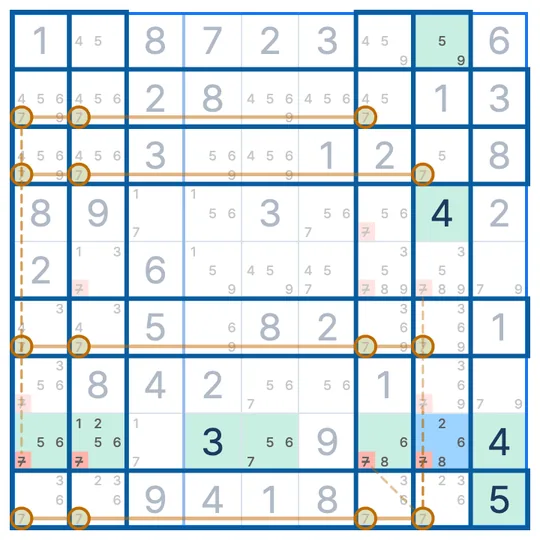

SUDOKU TECHNIQUE · 피쉬 계열
젤리피쉬
Jellyfish
젤리피쉬(Jellyfish)는 어떤 숫자의 후보가 네 행에서 똑같은 네 열 안에만 있을 때, 그 네 열의 나머지 칸에서 그 숫자를 지우는 스도쿠 기법이에요.
- 보는 숫자
- 한 종류
- 필요한 줄
- 행 4개 + 열 4개
- 지우는 곳
- 네 열의 나머지 칸
젤리피쉬 모양
숫자 2만 본 그림이에요. 1행·3행·6행·9행에서 2가 갈 수 있는 칸은 모두 2열·4열·7열·8열 안에 있어요. X-윙(줄 2개), 소드피쉬(줄 3개)를 네 줄로 넓힌 모양이에요.
왜 지울 수 있나요?
1행, 3행, 6행, 9행에는 2가 하나씩 들어가야 하고, 넷 다 2열·4열·7열·8열 안에서만 들어갈 수 있어요. 한 열에 2는 하나뿐이니 네 열이 네 행에서 2를 하나씩 가져가요.
그러면 네 열의 나머지 칸(2행 2열, 5행 4열, 7행 7열, 4행 8열)에는 2가 들어갈 수 없어요. 그래서 그 칸들의 2 후보를 지워요.
젤리피쉬 찾는 순서
- 숫자 하나를 정해요.
- 그 숫자의 후보가 두세 칸, 많아야 네 칸뿐인 행을 모아요.
- 그런 행 네 개의 후보가 합쳐서 네 열 안에만 있는지 봐요.
- 그렇다면 그 네 열의 나머지 칸에서 그 숫자를 지워요.
행과 열을 바꿔도 똑같아요. 네 열의 후보가 네 행 안에만 있으면, 그 네 행의 나머지 칸에서 지워요.
자주 헷갈리는 점
행마다 후보가 몇 개여야 하나요?
두 개에서 네 개까지 괜찮아요. 네 행을 합쳤을 때 열이 네 개만 나오면 돼요.
다섯 줄 이상도 있나요?
원리상 가능하지만, 다섯 줄 모양이 있으면 남은 줄에 더 작은 피쉬가 생겨서 그쪽이 먼저 보여요. 그래서 보통 젤리피쉬까지만 써요.
자주 나오나요?
드문 편이에요. 어려운 퍼즐에서 다른 기법이 막혔을 때 찾아보세요.
비슷한 기법
스도쿠 리그 앱에서
막히면 힌트가 젤리피쉬를 보여줘요
풀다가 막혀 힌트를 누르면, 지금 판의 젤리피쉬 칸과 지울 칸을 보드 위에 그려서 보여줘요. 기법 연습에서는 실제 문제 위에서 젤리피쉬 수업을 들을 수 있어요. 첫 판에서 모양과 이유를 같이 보고, 다음 판에서는 직접 찾아봐요.
